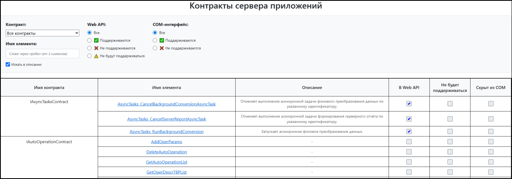

Список интерфейсов сервера приложений, доступных при разработке модулей расширения
Информация
Сервер приложений ЛОЦМАН:PLM содержит встроенный анализатор исходного кода, который позволяет разработчикам плагинов просматривать все доступные контракты (API) и сигнатуры их методов в реальном времени. Анализатор отображает полную документацию из XML-комментариев, включая описания методов, параметров, возвращаемых значений и важные примечания.
Включение анализатора
Доступ к анализаторам исходного кода контролируется переменной окружения LOODSMAN_SOURCE_CODE_ANALYZATORS.
Если переменная установлена в значение 1, будут доступна конечная точка:
GET /api/v{version}/SourceCodeAnalyzators/contracts— анализ контрактов, доступных для использования в плагинах.
По умолчанию (если переменная не установлена или имеет значение 0) эта конечная точка возвращает пустой ответ с кодом 200.
Примеры установки переменных окружения
ВАЖНО!
После установки переменной окружения необходимо перезапустить службу Loodsman AppServer
Использование анализатора
1 Откройте в браузере страницу:
http(s)://<адрес сервера>:<порт>/api/v4/SourceCodeAnalyzators/contracts
Примечание
Версия API может отличаться. Актуальную версию можно посмотреть в Swagger: `/swagger/index.html`
2 Вы увидите таблицу со всеми контрактами сервера:

| Столбец | Описание |
|---|---|
| Имя контракта | Название интерфейса, который можно внедрить в конструктор контроллера |
| Имя элемента | Кликабельное имя метода (🔧) или свойства (📦) |
| Описание | Краткое описание из XML-документации (обрезано до 2 строк, полный текст в модальном окне) |
| В Web API | ✅ — метод доступен для вызова через Web API (помечен [InWebApi]) |
| Не будет поддерживаться | ⚠️ — метод устарел и будет удалён в будущих версиях (помечен [NotSupportedInWebApi]) |
| Скрыт из COM | 🔒 — метод не экспортируется в классический COM-интерфейс (помечен [ComExportIgnore]) |
3 Нажмите на имя метода или свойства — откроется модальное окно, содержащее:
- Полную сигнатуру с подсветкой синтаксиса C#
- Описание метода или свойства из XML-документации
- Важные примечаниями (из тега
<remarks>) - Список параметров с типами и описаниями
- Описание возвращаемого значения (включая структуру
TableResult)
4 Нажмите кнопку «Копировать» — сигнатура будет скопирована в буфер обмена.
Фильтрация и поиск
Для быстрого поиска нужных элементов используйте фильтры:
| Фильтр | Описание |
|---|---|
| Контракт | Показать методы только выбранного интерфейса |
| Имя элемента | Поиск по названию метода или свойства. Можно вводить несколько слов через пробел — будут найдены методы, содержащие все введённые слова. Поиск активируется при вводе хотя бы одного слова длиной ≥ 3 символов. |
| ☑ Искать в описании | Переключает поиск с названия на содержимое описания (summary). Состояние чекбокса сохраняется между сессиями. |
| Web API | ✅ Поддерживаются — методы, доступные для использования (помечены [InWebApi])❌ Не поддерживаются — методы, недоступные через Web API (нет [InWebApi])⚠️ Не будут поддерживаться — устаревшие методы (помечены [NotSupportedInWebApi]) |
| COM-интерфейс | ✅ Поддерживаются — методы, доступные в COM API ❌ Не поддерживаются — методы, скрытые из COM API (помечены [ComExportIgnore]) |
Обозначения статусов
| Статус | Значение | Рекомендация |
|---|---|---|
| ✅ В Web API | Метод помечен [InWebApi] |
Уже существует в классическом Web API ЛОЦМАН:PLM |
| ⚪ Не в Web API | Метод не помечен [InWebApi] |
Недоступен в классическом Web API ЛОЦМАН:PLM |
| ⚠️ Не будет поддерживаться | Метод помечен [NotSupportedInWebApi] |
Устарел, может быть удалён в будущих версиях |
| 🔒 Скрыт из COM | Метод помечен [ComExportIgnore] |
Недоступен в классическом COM API ЛОЦМАН:PLM |
ВАЖНО!
Используйте только методы со статусом «✅ В Web API» или «⚪ Не в Web API».
Методы со статусом «⚠️ Не будет поддерживаться» или «🔒 Скрыт из COM» могут быть удалены в будущих версиях без предупреждения.
Как использовать скопированную сигнатуру в плагине
Скопированная сигнатура показывает, как выглядит метод или свойство в интерфейсе контракта. Чтобы использовать его в своём плагине:
-
Добавьте контракт в конструктор контроллера:
private readonly IConfMetaDataContract _metaData; public MyPluginController(IConfMetaDataContract metaData) { _metaData = metaData; } -
Вызовите метод или обратитесь к свойству: ```CSharp title=Метод var result = _metaData.GetLinks();
Еще примеры плагина
using Ascon.Plm.AppServer.Contracts.ConfigServer;
using Ascon.Plm.AppServer.WebApi.Controllers;
using Microsoft.AspNetCore.Mvc;
using Asp.Versioning;
using System.Collections.Generic;
using Ascon.Plm.AppServer.WebApi.Extensions;
using System.Linq;
using Ascon.Plm.AppServer.WebApi.Enums;
using Ascon.Plm.Common.Mapping;
[ApiController]
[Route("api/v{version:apiVersion}/links")]
[ApiVersion("4.0")]
public class LinksController : ApiController
{
private readonly IConfMetaDataContract _metaData;
public LinksController(IConfMetaDataContract metaData)
{
_metaData = metaData;
}
[HttpGet]
public ActionResult<IEnumerable<Plugin_GetLinksOutputDto>> GetLinks()
{
var dtos = _metaData
.GetLinks()
.ReadToEnumerable<Plugin_GetLinksOutputDto>()
.ToList();
return Ok(dtos);
}
}
public class Plugin_GetLinksOutputDto
{
[Column("_ID")]
public int Id { get; set; }
[Column("_NAME")]
public string Name { get; set; }
[Column("_TYPE")]
public LinkTypeKinds Type { get; set; }
[Column("_INVERSENAME")]
public string InverseName { get; set; }
[Column("_ALIAS")]
public string Alias { get; set; }
[Column("_DESCRIPTION")]
public string Description { get; set; }
[Column("_ICON")]
public byte[] Icon { get; set; }
[Column("_ORDER")]
public int Order { get; set; }
}
using Ascon.Plm.AppServer.WebApi.Controllers;
using Microsoft.AspNetCore.Mvc;
using Asp.Versioning;
using Ascon.Plm.AppServer.Contracts;
[ApiController]
[Route("api/v{version:apiVersion}/main-system-connection")]
[ApiVersion("4.0")]
public class MainSystemConnectionController : ApiController
{
private readonly IMainSystemConnectionContract _mainSystemConnection;
public MainSystemConnectionController(IMainSystemConnectionContract mainSystemConnection)
{
_mainSystemConnection = mainSystemConnection;
}
[HttpGet("event-state")]
public ActionResult GetEventState()
{
int state = _mainSystemConnection.EventProcessingState;
return Ok(state);
}
[HttpPut("event-state")]
public IActionResult SetEventState([FromBody] int state)
{
_mainSystemConnection.EventProcessingState = state;
return Ok();
}
}
Совет
Обратите внимание на типы параметров и возвращаемого значения. Типы, начинающиеся с
I(например,IDbSession), являются интерфейсами и могут быть также получены через DI. Типы ЛОЦМАН (например,TableResult,PolynomApi) подсвечиваются бирюзовым цветом в модальном окне.
Возможные проблемы
Страница загрузилась, но окно браузера пустое
Причина: переменная окружения LOODSMAN_SOURCE_CODE_ANALYZATORS не установлена или установлена в 0.
Решение:
- Проверьте значение переменной:
- Windows:
echo %LOODSMAN_SOURCE_CODE_ANALYZATORS% - Linux:
echo $LOODSMAN_SOURCE_CODE_ANALYZATORS
- Windows:
- Установите значение
1и перезапустите службу.
Страница анализатора недоступна (404)
Причина: неверная версия API в URL.
Решение: проверьте актуальную версию API в Swagger (/swagger/index.html) и используйте её в URL.
Страница открывается, но список контрактов пуст
Причина: сервер не смог найти сборки с контрактами.
Решение: обратитесь к администратору сервера для проверки целостности установки ЛОЦМАН:PLM.
Модальное окно не открывается при клике на метод
Причина: JavaScript-ошибка или не загрузились зависимости.
Решение:
- Откройте консоль разработчика в браузере (F12) и проверьте наличие ошибок.
- Убедитесь, что файлы
ContractScripts.jsиAnalyzatorsStyles.cssдоступны. - Очистите кэш браузера (Ctrl+F5).
Отсутствует описание метода или параметров
Причина: файл XML-документации не найден или метод не документирован.
Решение:
- Убедитесь, что в папке с сервером приложений присутствует файл
Ascon.Plm.AppServer.WebApi.xml. - Если файл отсутствует, обратитесь к администратору для восстановления установки.
- Если файл есть, но описание отсутствует — метод не имеет XML-комментариев в исходном коде.
Поиск не находит ожидаемые методы
Причина 1: введено менее 3 символов в каждом слове.
Решение: поиск активируется только когда хотя бы одно слово имеет длину ≥ 3 символов. Введите более длинное слово.
Причина 2: поиск ищет точное вхождение подстроки, а не словоформы.
Решение: используйте корень слова (например, «удал» найдёт «удалить», «удаляет», «удаление»).
Причина 3: не включен чекбокс ☑ Искать в описании» при поиске по описанию.
Решение: отметьте чекбокс, если хотите искать в тексте описания.
Cовет
Добавьте страницу анализатора в закладки браузера для быстрого доступа при разработке плагинов. Используйте поиск по нескольким словам (например, «удал атрибут связи») чтобы быстро находить нужные методы по их назначению, даже если не помните точное название. Чекбокс «Искать в описании» сохраняет своё состояние между сессиями браузера.